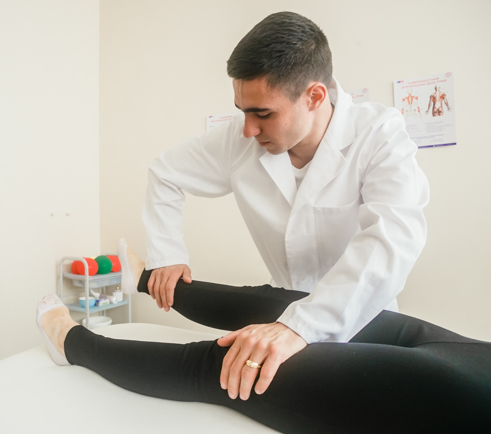

João: a ascensão que não é "cerveja"
João, 22 anos. Dormência nos pés durante o futebol → dois dias depois não sobe escada → domingo não fica em pé no banho → segunda-feira não sai do sofá. A cerveja do fim de semana foi a isca; a progressão em dias é o fio.
Reconstruir o caso completo de João, listar os dados positivos antes de nomear a doença e reconhecer os cinco achados que definem o quadro.
Caso João
João, 22 anos. Enquanto assistia a uma partida de futebol com o vizinho, iniciou dormência nos pés. A dormência foi prontamente atribuída ao excesso de cerveja — isca de porta, não a causa.
Dois dias depois, dificuldade em subir para o quarto. A fraqueza piorou rapidamente. Num domingo, mal conseguindo ficar em pé durante o banho, preferiu ficar em casa. Na manhã de segunda-feira, não conseguia sair do sofá. O quadro piorou: perdeu a força dos membros superiores também.
Exame
- PA 160 × 90, frequência cardíaca 130.
- Pulmões limpos; coração com ritmo regular e algumas extrassístoles isoladas.
- Hipotonia nos quatro membros, mais acentuada nos membros inferiores.
- Hipoestesia superficial pouco intensa nas plantas dos pés.
- Membros superiores plégicos e membros inferiores paréticos.
- Reflexos profundos abolidos nos quatro membros.
- LCR: hiperproteinorraquia com contagem celular normal.
Método: ir devagar
Qual o provável diagnóstico? Antes de nomear a doença, listar os dados positivos.
Cinco positivos
- Fraqueza que começa com dificuldade para subir escadas (membros inferiores primeiro).
- A fraqueza evolui e acomete também os membros superiores.
- Trajeto: começa embaixo e sobe (ascendente).
- Hipotonia / flacidez nos membros.
- Reflexos tendinosos profundos abolidos.
- (bônus liquórico) Hiperproteinorraquia com contagem celular normal.
Por que importa na prática: se a isca "cerveja" vira diagnóstico, a progressão em dias até tetraparesia e arreflexia passa batida — e a porta erra o tempo de agir.
Resumo operacional: dormência → fraqueza ascendente em dias + flácida + arreflexia + LCR proteína ↑ / células normais = quadro de porta para GBS.

Kineziolv, Manual Muscle Testing · CC BY-SA 4.0 · fonte
O achado motor de porta
A fraqueza começa nos membros inferiores — o paciente não sobe escada, não fica em pé no banho, não sai do sofá. O exame de força proximal de MMII é o primeiro dado objetivo que transforma "cansaço" em déficit motor documentado. A progressão em dias, e não em horas ou meses, é o que separa esta porta das demais.
A localização no neurônio motor diferencia esse padrão entre 1º NMS, 2º NMS, placa e músculo.
Quiz
Q1. Em João, o primeiro erro de porta a evitar é:
Q2. O trajeto motor descrito em João é classicamente:
Q3. No LCR de João, o par clássico é: